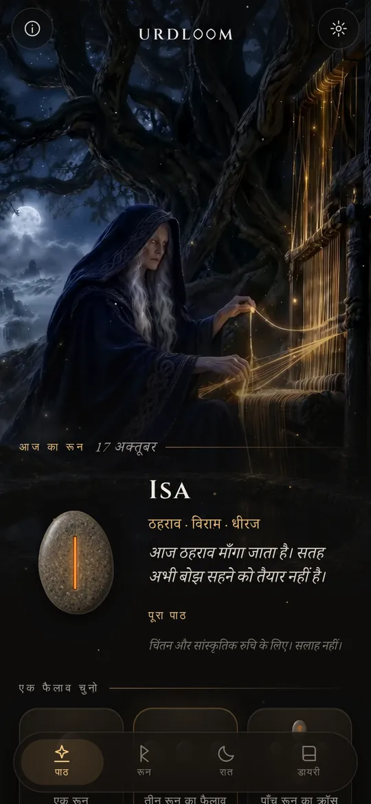
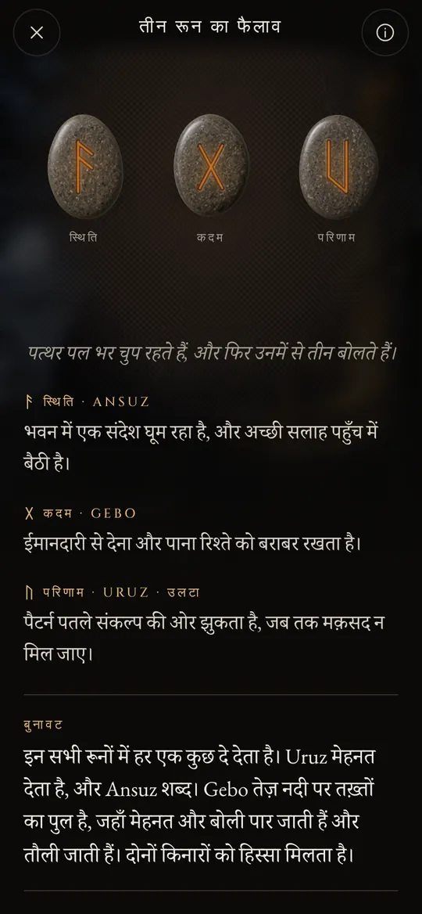
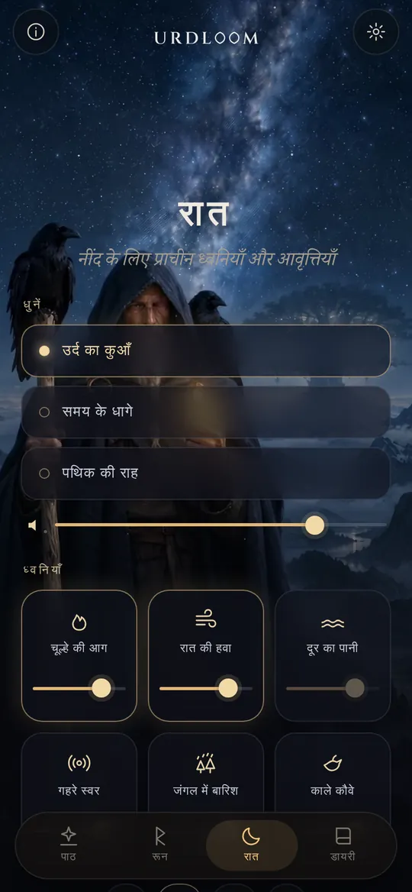
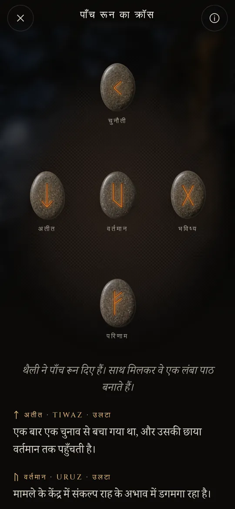

भाग्य के कुएँ से रून पाठ।
एल्डर फ़ुथार्क के रून डालो, जो गिरे उसे पुरानी कविताओं की आवाज़ में पढ़ो, और रात की ध्वनियों को तुम्हें नींद तक ले जाने दो।
एक कुएँ के पास बैठी तीन स्त्रियाँ
पुरानी नॉर्स कविताओं में तीन नॉर्न विश्व-वृक्ष इग्ड्रासिल के नीचे एक कुएँ के पास बैठी हैं। वे उसकी जड़ों को सींचती हैं, लकड़ी की पट्टियों पर चिह्न खोदती हैं और जन्म लेने वाले हर प्राणी का जीवन तय करती हैं। उनमें सबसे बड़ी उर्द है। उसके नाम का अर्थ है जो घट चुका है, और कुएँ का नाम उसी पर रखा गया है।
Urdloom का नाम उसी से आया है, और उस करघे से भी जिस पर कहा जाता था कि भाग्य बुना जाता है। ऐप वही भाव सँजोए रखता है: हाथ में पत्थरों की थैली, ज़मीन पर बिछा कपड़ा, और राशिफल की नहीं, गाथाओं की आवाज़ में लिखे पाठ।

वहाँ से आती हैं कुमारियाँ, बहुत कुछ जानने वाली, तीन, उस झील से जो वृक्ष के नीचे है।वोलुस्पा, छंद 20
थामो, हिलाओ, छोड़ दो
थैली को थामो और पत्थर तुम्हारे हाथ में खड़खड़ाते हैं। छोड़ दो और वे कपड़े पर उड़ जाते हैं, लुढ़कते हैं, ठहरते हैं और एक-एक करके पलटते हैं। उनके नीचे पाठ दिखाई देता है।

एक रून
सामने के दिन के लिए एक पत्थर, या ऐसे प्रश्न के लिए जिसका उत्तर हाँ या नहीं में हो सके। छुओ और वह डाल दिया जाता है।


तीन रून का फैलाव
स्थिति, कदम, परिणाम। इसे एक छोटी गाथा की तरह बाएँ से दाएँ पढ़ा जाता है, फिर एक साथ: अंत का धागा दिखाता है कि तीनों आपस में कैसे बात करते हैं।

पाँच रून का क्रॉस
बीच की रेखा पर अतीत, वर्तमान और भविष्य, ऊपर चुनौती और नीचे परिणाम, और इन सबके बीचों-बीच तुम।




हर पाठ हाथ से लिखा गया है: चौबीस रून, हर जोड़ी और तीन रूनों के सभी 2,024 संयोजन, बाईसों भाषाओं में से हर एक में। तुम्हारे इंतज़ार के दौरान कुछ भी अपने-आप नहीं बनाया जाता।

चौबीस रून
एल्डर फ़ुथार्क सबसे पुरानी रून वर्णमाला है, जिसे लगभग दूसरी से आठवीं सदी तक खोदा जाता रहा। इसके चौबीस चिह्न आठ-आठ के तीन परिवारों में बँटे हैं, जिन्हें एट्ट कहते हैं, और हर एट्ट का नाम उस देवता पर है जिसका रून उसके सिरे पर खड़ा है। पढ़ने के लिए किसी पत्थर को छुओ।
फ़्रेयर का एट्ट
हागल का एट्ट
टीर का एट्ट
हर भाषा में रूनों के नाम उनके पुराने रूप में ही रखे गए हैं। ये स्वयं चिह्नों के नाम हैं, जिन्हें विद्वानों ने रून कविताओं और सबसे पुरानी वर्णमालाओं से फिर से गढ़ा है।
रूनों का संक्षिप्त इतिहास
रून सबसे पहले अक्षर हैं। जर्मनिक लोगों ने लगभग पंद्रह सौ वर्षों तक उन्हें लकड़ी, हड्डी, धातु और पत्थर पर खोदा। ये चिह्न और पर्चियाँ डालने की पुरानी रीत हम तक इसी तरह पहुँचीं।

सफ़ेद कपड़े पर पर्चियाँ
रोमन इतिहासकार टैसिटस लिखता है कि जर्मनिक लोग किसी फलदार पेड़ की एक डाल काटकर उसकी पतली पट्टियाँ बनाते हैं, उन पर चिह्न लगाते हैं और उन्हें एक सफ़ेद कपड़े पर बिखेर देते हैं। कोई पुरोहित या घर का मुखिया एक-एक करके तीन पट्टियाँ उठाता है और उन्हें पढ़ता है। वह यह नहीं कहता कि वे चिह्न रून थे, पर यह भाव-भंगिमा वही है जिसे Urdloom सँजोए रखता है।
पहले अभिलेख
डेनमार्क के विमोसे दलदल में मिली हड्डी की एक कंघी पर सबसे पुराने ज्ञात रून अभिलेखों में से एक अंकित है, बस एक शब्द: harja। उन्हीं सदियों के भालों के फल, ब्रोच और ताबीज़ दिखाते हैं कि यह लिपि तब तक पूरे उत्तर में फैल चुकी थी।
एक ही पत्थर पर पूरी पंक्ति
गोटलैंड के किल्वर पत्थर पर किसी ने चौबीसों चिह्न उनके क्रम में खोदे, जो हमारे पास मौजूद सबसे पुराना पूरा फ़ुथार्क है। इस पंक्ति का नाम इसके पहले छह अक्षरों से बना है: f, u, th, a, r, k।
सोने के सींग
डेनमार्क में गालेहुस के दो सोने के सींगों में से एक पर अनुप्रास वाली कविता की एक पंक्ति है: मैंने, होल्ट के पुत्र ह्लेवागास्टिज़ ने, यह सींग बनाया। यह किसी भी जर्मनिक भाषा की कविता की सबसे पुरानी पंक्तियों में से एक है।
वाइकिंग युग के लिए सोलह चिह्न
स्कैंडिनेविया में वर्णमाला घटकर सोलह चिह्नों की रह जाती है: यंगर फ़ुथार्क। इसके अक्षरों में हज़ारों स्मृति-पत्थर खड़े किए जाते हैं, जिनमें डेनमार्क के येलिंग के विशाल पत्थर भी हैं।
कविताएँ लिखी जाती हैं
आइसलैंड के लिपिक एड्डा की कविताएँ लिपिबद्ध करते हैं। वोलुस्पा में नॉर्न उर्द के कुएँ के पास बैठी हैं; हावामाल में ओडिन हवाओं से घिरे वृक्ष पर नौ रातें लटका रहता है और एक चीख़ के साथ रूनों को उठा लेता है।
हर रून के लिए एक छंद
नॉर्वे और आइसलैंड की रून कविताएँ, एक पुरानी एंग्लो-सैक्सन कविता के साथ, हर रून को एक छोटा छंद देती हैं: मवेशी कुटुंब में कलह कराते हैं, ओले सबसे ठंडा अनाज हैं, बर्फ़ बहुत फिसलन भरी है। रूनों के अर्थों के बारे में जो कुछ जाना जाता है, उसका बड़ा हिस्सा इन्हीं छंदों से आता है।
फिर से पढ़ना
चिंतन के लिए रूनों का उपयोग एक आधुनिक पुनरुत्थान है, जो उन्हीं कविताओं और एड्डा के चित्रों पर टिका है। Urdloom खुलकर इसी परंपरा में खड़ा है: वह कोई प्राचीन भविष्यवक्ता होने का दावा नहीं करता, बस पुराने चिह्नों को सावधानी से पढ़ता है।

नींद के लिए प्राचीन ध्वनियाँ और आवृत्तियाँ
जब दिन ढल जाता है, पथिक तारों के नीचे निकल आता है। एक धुन चुनो, उस पर ध्वनियाँ बिछाओ और टाइमर लगाओ। स्क्रीन बंद होने पर भी ध्वनियाँ बजती रहती हैं और अपने-आप धीरे-धीरे थम जाती हैं।
तीन धुनें: उर्द का कुआँ, समय के धागे और पथिक की राह, जो कंठ-गायन, फ़्रेम ड्रम और गज़ से बजने वाली टागेलहार्पा पर रची गई हैं।
मिलाने के लिए छह परतें, हर एक का अपना स्तर: चूल्हे की आग, रात की हवा, दूर का पानी, गहरे स्वर, जंगल में बारिश और काले कौवे।
हर ध्वनि Urdloom के लिए बनाई गई है। कुछ भी इंटरनेट से नहीं बजाया जाता।
छोटी बातें जो मायने रखती हैं
- हर सुबह एक रून
- पहली स्क्रीन पर एक पत्थर औंधा पड़ा इंतज़ार करता है। चाहो तो हर सुबह एक छोटा संदेश तुम्हें बताता है कि तुम्हारे लिए कौन-सा रून निकाला गया।
- एक डायरी
- जो पाठ तुमसे बात करें, उन्हें उस प्रश्न के साथ सहेज लो जो तुमने पूछा था।
- साझा करने लायक पाठ
- किसी पाठ को चित्र की तरह भेजो: पत्थर जैसे गिरे थे, और उनके नीचे के शब्द।
- बाईस भाषाएँ
- हर भाषा उसे पढ़ने वाले लोगों ने लिखी और जाँची है, और अक्षरों का रूप और आकार तुम बदल सकते हो।
जो यहाँ होता है, यहीं रहता है
Urdloom बिना इंटरनेट के चलता है। न कोई खाता, न साइन-अप, न विज्ञापन, और इसमें किसी भी तरह का एनालिटिक्स या ट्रैकिंग नहीं है। तुम्हारे प्रश्न, पाठ और डायरी तुम्हारे फ़ोन पर ही रहते हैं।
निजताप्रश्न
क्या Urdloom भविष्य बताता है?
नहीं। पाठ चिंतन और सांस्कृतिक रुचि के लिए हैं। वे इशारा करते हैं, जैसे पुराने रून करते थे, और अर्थ तुम्हारे अपने जीवन में आकार लेता है। ऐप में कुछ भी चिकित्सा, वित्तीय, कानूनी या किसी अन्य प्रकार की पेशेवर सलाह नहीं है।
भाषा पुरानी क्यों लगती है?
रून कविताओं, गाथाओं और पहेलियों की दुनिया से आते हैं। हमने पाठ जान-बूझकर उसी आवाज़ में लिखे हैं और हर भाषा में उन्हें रून परंपरा के जितना हो सका उतना क़रीब रखा है।
क्या मुझे इंटरनेट कनेक्शन चाहिए?
नहीं। पाठों से लेकर रात की ध्वनियों तक, सब कुछ ऐप के भीतर है।
कौन-कौन सी भाषाएँ हैं?
अंग्रेज़ी, तुर्की, जर्मन, फ़्रेंच, स्पेनिश, इतालवी, पुर्तगाली, रूसी, यूक्रेनी, पोलिश, डच, स्वीडिश, नॉर्वेजियन, फ़िनिश, यूनानी, अरबी, हिन्दी, इंडोनेशियाई, जापानी, कोरियाई, चीनी और अल्बानियाई।
हमें लिखो
कोई प्रश्न, तुम्हारी भाषा में कोई शब्द जो ठीक न लगे, या कोई पाठ जो तुम्हारे साथ रह गया हो: हम हर संदेश पढ़ते हैं।
support@urdloom.com